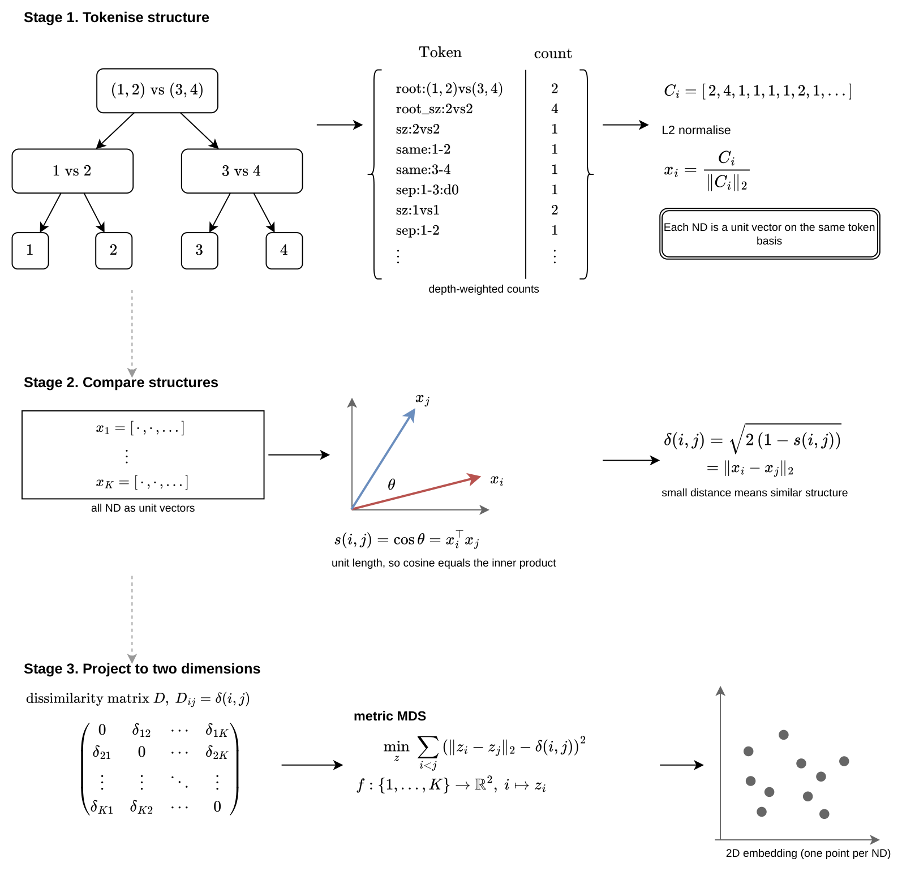
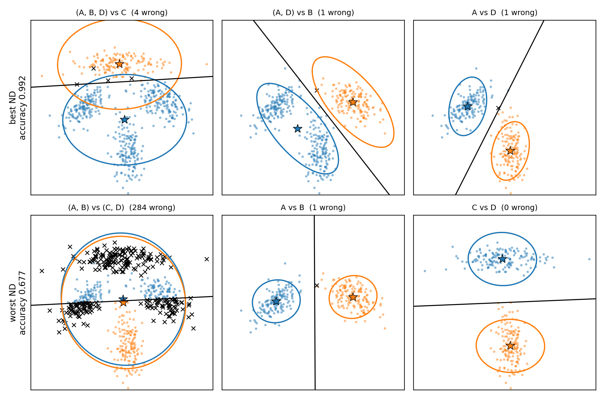

A tutorial with ndscape
A nested dichotomy (ND) solves a multiclass problem with a binary tree of two-class problems. The root splits the classes into two groups, each group that still holds more than one class is split again, and the leaves are single classes, so an ND for K classes has K − 1 binary classifiers, each fitted on the training samples of the classes below it. The predicted probability of a class is the product of the node probabilities on the path from the root to that class, and the log loss used below is the negative log of this product for the true class, averaged over samples. Different NDs pose different binary problems and so give different predictions, and there are 1 × 3 × 5 × … × (2K − 3) of them: 3 for 3 classes, 945 for 6, 10,395 for 7 and 34,459,425 for 10.
This tutorial fits all 945 NDs for two 6-class datasets, scores each one by cross-validation and by its variance across bootstrap resamples, and reads the scores on the ndscape map. The notebook, ndscape_tutorial.ipynb, ran in 19 minutes on 16 cores and produced every number and figure below.
Glass Identification has 214 samples, 9 features and 6 glass types. The features are the refractive index and the weight percentages of eight oxides (Na, Mg, Al, Si, K, Ca, Ba and Fe) in each glass fragment. A 70/30 split, stratified by class, gives 149 training samples and 65 test samples, and the test labels are not used until an ND has been selected. Logistic regression on standardised features is the binary classifier at every node, and any scikit-learn classifier with predict_proba can replace it.
pip install "ndscape[plot,spatial]" torchimport numpy as np
from sklearn.datasets import fetch_openml
from sklearn.linear_model import LogisticRegression
from sklearn.model_selection import train_test_split
from sklearn.pipeline import make_pipeline
from sklearn.preprocessing import StandardScaler
import ndscape as nds
GLASS_NAMES = {"build wind float": "building (float)", "build wind non-float": "building (non float)",
"vehic wind float": "vehicle (float)"}
def load(name):
X, y = fetch_openml(name, version=1, return_X_y=True, as_frame=True, parser="liac-arff")
return X.to_numpy(float), y.astype(str)
X, y = load("glass")
y = y.replace(GLASS_NAMES).to_numpy(dtype=object)
X_train, X_test, y_train, y_test = train_test_split(X, y, test_size=0.3, stratify=y, random_state=0)
classes = sorted(set(y_train))
lr = make_pipeline(StandardScaler(), LogisticRegression(max_iter=1000))Three of the Glass classes, building (float), building (non float) and headlamps, have three NDs. Each is fitted with logistic regression at both nodes, and the code prints each node's probability for the first training sample, the class probabilities they multiply to, and the cross-validated accuracy on the training samples of these three classes.
from sklearn.model_selection import StratifiedKFold
FOLDS = 3
def name(side):
return side[0] if len(side) == 1 else "(" + ", ".join(side) + ")"
def show(tree):
splits = {frozenset(left + right): (left, right) for left, right in tree}
def lines(group, prefix):
out = []
kids = [side for side in splits[frozenset(group)] if len(side) > 1]
for i, kid in enumerate(kids):
last = i == len(kids) - 1
left, right = splits[frozenset(kid)]
out.append(f"{prefix}{'└─' if last else '├─'} {name(left)} vs {name(right)}")
out += lines(kid, prefix + (" " if last else "│ "))
return out
left, right = tree[0]
return "\n".join([f"{name(left)} vs {name(right)}"] + lines(left + right, ""))
def cv_scores(tree, classes, X, y, base, folds):
scores = [nds.ND(tree, classes).fit(X[tr], y[tr], base=base).score(X[va], y[va]) for tr, va in folds]
return np.mean([s["accuracy"] for s in scores]), np.mean([s["logloss"] for s in scores])
three = ["building (float)", "building (non float)", "headlamps"]
keep = np.isin(y_train, three)
X3, y3 = X_train[keep], y_train[keep]
folds3 = list(StratifiedKFold(FOLDS, shuffle=True, random_state=0).split(X3, y3))
print("first training sample is", y3[0])
for tree in nds.all_trees(three):
nd = nds.ND(tree, three).fit(X3, y3, base=lr)
print(show(tree))
for (left, right), model in nd.models.items():
print(f" P({name(left)} | x) = {model.predict_proba(X3[:1])[0, 0]:.3f}")
print(" P(class | x):", ", ".join(f"{c} {p:.3f}" for c, p in zip(three, nd.predict_proba(X3[:1])[0])))
print(" cross-validated accuracy %.3f, log loss %.3f\n" % cv_scores(tree, three, X3, y3, lr, folds3))first training sample is building (float)
(building (non float), headlamps) vs building (float)
└─ building (non float) vs headlamps
P((building (non float), headlamps) | x) = 0.788
P(building (non float) | x) = 0.992
P(class | x): building (float) 0.212, building (non float) 0.781, headlamps 0.006
cross-validated accuracy 0.746, log loss 0.569
(building (float), building (non float)) vs headlamps
└─ building (float) vs building (non float)
P((building (float), building (non float)) | x) = 0.996
P(building (float) | x) = 0.192
P(class | x): building (float) 0.191, building (non float) 0.805, headlamps 0.004
cross-validated accuracy 0.754, log loss 0.560
(building (float), headlamps) vs building (non float)
└─ building (float) vs headlamps
P((building (float), headlamps) | x) = 0.267
P(building (float) | x) = 0.989
P(class | x): building (float) 0.264, building (non float) 0.733, headlamps 0.003
cross-validated accuracy 0.705, log loss 0.657In the first ND, the root gives probability 0.788 to (building (non float), headlamps) and the second node gives 0.992 to building (non float) within that pair, so P(building (non float)) = 0.788 × 0.992 = 0.781 and P(building (float)) = 1 − 0.788 = 0.212. The three NDs use the same data and the same binary classifier and differ only in the binary problems they pose, yet they give the true class of this sample probabilities of 0.212, 0.191 and 0.264, and their cross-validated accuracies range from 0.705 to 0.754. With six classes there are 945 such choices.
trees, coords = nds.embed_trees(classes)Each point on the map is one ND. NDs that share structure, for example the same root split and similar splits below it, are close together, and NDs with little structure in common are far apart. Colour shows a score of each ND on the data. The map is a two-dimensional approximation of the distances between NDs, so some distances are distorted, and its axes, MDS-1 and MDS-2, have no meaning of their own. No single ND is marked, because the NDs form clusters and the pattern to read is how scores differ between and within clusters.
embed_trees returns every ND for up to 7 classes, and a sample of 2,000 NDs above that, with a point on the map for each. Each ND is encoded as depth-weighted structural tokens, the L2-normalised token counts are compared by cosine similarity, and metric multidimensional scaling places the NDs so that Euclidean distance on the map approximates the chord distance between their token vectors. For a given number of classes the map does not depend on the data, so both datasets in this tutorial have the same map.

How the map is built, from the paper.
import matplotlib.pyplot as plt
from bokeh.io import save
from bokeh.models import HoverTool, LinearColorMapper
from joblib import Parallel, delayed
from ndscape.plot import BRIGHT
from sklearn.utils import resample
B = 50
def bootstrap_variance(tree, classes, X, y, X_eval, base, resamples):
probs = np.stack([nds.ND(tree, classes).fit(X[i], y[i], base=base).predict_proba(X_eval) for i in resamples])
votes = (probs.argmax(axis=2)[:, :, None] == np.arange(len(classes))).sum(axis=0)
return 1 - votes.max(axis=1).mean() / len(resamples), probs.var(axis=0, ddof=1).mean()
def score_all(trees, coords, classes, X_train, y_train, X_test, base):
folds = list(StratifiedKFold(FOLDS, shuffle=True, random_state=0).split(X_train, y_train))
cv = Parallel(n_jobs=-1)(delayed(cv_scores)(t, classes, X_train, y_train, base, folds) for t in trees)
rows = [{"tree": t, "coord": c, "accuracy": a, "logloss": ll} for t, c, (a, ll) in zip(trees, coords, cv)]
# stratified, so every class is in every resample; the same resamples for every ND
resamples = [resample(np.arange(len(y_train)), stratify=y_train, random_state=b) for b in range(B)]
boot = Parallel(n_jobs=-1)(delayed(bootstrap_variance)(t, classes, X_train, y_train, X_test, base, resamples)
for t in trees)
for r, (zero_one, prob) in zip(rows, boot):
r["zero_one_variance"] = zero_one
r["probability_variance"] = prob
return rows
def map_png(rows, metric, path, cmap=BRIGHT):
coords = np.array([r["coord"] for r in rows])
fig, ax = plt.subplots(figsize=(8, 5.2))
sc = ax.scatter(coords[:, 0], coords[:, 1], c=[r[metric] for r in rows], cmap=cmap, s=30, linewidths=0)
fig.colorbar(sc, ax=ax, fraction=0.046, pad=0.02).set_label(metric)
ax.set_xlabel("MDS-1")
ax.set_ylabel("MDS-2")
fig.tight_layout()
fig.savefig(path, dpi=200)
plt.show()
def variance_html(rows, path):
p = nds.plot_interactive(rows, metric="zero_one_variance", path=path)
mapper = p.select_one(LinearColorMapper)
mapper.palette = mapper.palette[::-1]
p.select_one(HoverTool).tooltips.append(("zero-one variance", "@value{0.000}"))
save(p, path)
rows = score_all(trees, coords, classes, X_train, y_train, X_test, lr)
map_png(rows, "accuracy", "glass_lr_accuracy.png")
nds.plot_interactive(rows, metric="accuracy", path="glass_lr_accuracy.html")
map_png(rows, "zero_one_variance", "glass_lr_zero_one_variance.png", BRIGHT.reversed())
variance_html(rows, "glass_lr_zero_one_variance.html")Each ND is scored by 3-fold cross-validation on the training set, which gives its accuracy and log loss. It is then refitted on B = 50 bootstrap resamples of the training set, the same resamples for every ND, and evaluated on the test inputs without their labels. The resamples are drawn within each class, so every resample keeps every class at its training count. An unstratified resample can leave out a small class (Glass has 9 tableware samples in all), and a node whose resampled data then hold classes from one side only gets no classifier: ndscape gives that node's right-hand side zero probability, whichever side is missing, so on data with small classes the resampling should be stratified. The zero-one variance (Domingos, 2000) is the proportion of these fits whose predicted class differs from the most frequent predicted class, averaged over the test inputs. A zero-one variance of 0.15 means that, on average, 15% of the refitted NDs assign a test point to a class other than its most frequent predicted class. The probability variance is the variance of the predicted class probabilities, averaged over test inputs and classes, and is the prediction variance shown in the paper and on this site's dataset maps, where it is computed from 100 resamples.
Bootstrap variance measures how much an ND's predictions change when the training data are resampled, not whether they are right: an ND can be stable and consistently wrong, so variance is read with accuracy. The two variances can also disagree, because probability variance counts changes in predicted probabilities that never change the predicted class, and zero-one variance counts only changes of class, which happen mostly at test points near a decision boundary.
Cross-validated accuracy of each ND, with logistic regression at every node (interactive version).
Zero-one variance of each ND over 50 bootstrap resamples, with green for low variance (interactive version).
Over the 945 NDs, cross-validated accuracy ranges from 0.517 to 0.671 and zero-one variance from 0.095 to 0.238. Moran's I measures whether NDs that are near each other on this map have similar scores: it is close to 0 when scores are unrelated to position and positive when neighbours score alike. Here neighbours are the 50 nearest NDs on the map, with row-standardised weights, and I is 0.33 for accuracy, 0.26 for log loss, 0.27 for zero-one variance and 0.38 for probability variance. Each p-value comes from a permutation test that shuffles the scores over the points 999 times, and is 0.001, the smallest such a test can give. Both I and its p-value depend on the embedding and on the chosen neighbour graph, so they describe this map, not the NDs in general.
from collections import defaultdict
def root_split(tree):
left, right = tree[0]
small = min(left, right, key=len)
return f"{small[0]} vs rest" if len(small) == 1 else f"{len(small)} vs {len(left) + len(right) - len(small)} classes"
def by_root_split(rows, metric):
groups = defaultdict(list)
for r in rows:
groups[root_split(r["tree"])].append(r[metric])
for split, v in sorted(groups.items(), key=lambda kv: -np.mean(kv[1])):
print(f" {split:30} {len(v):4} NDs mean {np.mean(v):.5f} sd across NDs {np.std(v):.4f}")
return groups
for metric in ("accuracy", "logloss", "zero_one_variance", "probability_variance"):
values = np.array([r[metric] for r in rows])
print(f"{metric}: {values.min():.5f} to {values.max():.5f}, Moran's I",
nds.spatial_autocorrelation(values, coords))
print("cross-validated accuracy by root split")
groups = by_root_split(rows, "accuracy")
print("zero-one variance by root split")
by_root_split(rows, "zero_one_variance")In the paper, 6 of the 9 clusters on this map hold only NDs that isolate one class at the root (Section 5.3). The table groups the NDs by their root split, with the 15 two-against-four splits pooled into one row and the 10 three-against-three splits into another. The SD is the spread of accuracy across the NDs in a group, not the uncertainty in the group mean.
| Root split | NDs | Cross-validated accuracy, mean (SD across NDs) | Zero-one variance, mean |
|---|---|---|---|
| building (float) vs rest | 105 | 0.607 (0.015) | 0.129 |
| headlamps vs rest | 105 | 0.606 (0.023) | 0.155 |
| 3 vs 3 classes (10 splits) | 90 | 0.603 (0.026) | 0.170 |
| 2 vs 4 classes (15 splits) | 225 | 0.598 (0.028) | 0.167 |
| vehicle (float) vs rest | 105 | 0.598 (0.027) | 0.162 |
| tableware vs rest | 105 | 0.595 (0.021) | 0.168 |
| containers vs rest | 105 | 0.588 (0.024) | 0.161 |
| building (non float) vs rest | 105 | 0.559 (0.015) | 0.203 |
The NDs that separate building (float) from the other five classes at the root have the highest mean accuracy and the lowest mean zero-one variance, and those that separate building (non float) first have the lowest mean accuracy and the highest mean zero-one variance. These two root splits also have the smallest spread in accuracy. With its own train and test split, the paper finds the same pattern (Section 5.3). Every ND in its strongest cluster has a root that isolates building (float), a separation driven largely by Mg and Al, and its weakest cluster instead isolates building (non float), with a root accuracy of 62.6% and no equally clear chemical signal. The map therefore separates two root families that differ in whether the first decision follows a stable chemical signal.
Two selection rules are fixed before the test labels are used, and both use only the cross-validated scores: take the ND with the highest cross-validated accuracy, or take the most accurate ND within the root split with the highest mean accuracy. Each selected ND is refitted on the whole training set and scored once on the test set, and these two test scores are the final evaluation.
from scipy.stats import binomtest
best = max(rows, key=lambda r: r["accuracy"])
family = max(groups, key=lambda k: np.mean(groups[k]))
chosen = max((r for r in rows if root_split(r["tree"]) == family), key=lambda r: r["accuracy"])
correct = []
for label, r in (("highest cross-validated accuracy", best), (f"best ND in '{family}'", chosen)):
correct.append(nds.ND(r["tree"], classes).fit(X_train, y_train, base=lr).predict(X_test) == y_test)
k, n = int(correct[-1].sum()), len(y_test)
ci = binomtest(k, n).proportion_ci(method="wilson")
print(f"{label}: cv {r['accuracy']:.3f}, test {k}/{n} = {k / n:.3f}, 95% CI {ci.low:.3f} to {ci.high:.3f}")
print(show(r["tree"]), "\n")
a, b = correct
only_a, only_b = int((a & ~b).sum()), int((~a & b).sum())
print(f"right under one ND only: {only_a} and {only_b}, exact McNemar p = {binomtest(only_a, only_a + only_b).pvalue:.3f}")highest cross-validated accuracy: cv 0.671, test 37/65 = 0.569, 95% CI 0.448 to 0.682
(building (float), tableware, vehicle (float)) vs (building (non float), containers, headlamps)
├─ (building (float), tableware) vs vehicle (float)
│ └─ building (float) vs tableware
└─ (building (non float), containers) vs headlamps
└─ building (non float) vs containers
best ND in 'building (float) vs rest': cv 0.637, test 39/65 = 0.600, 95% CI 0.479 to 0.710
(building (non float), containers, headlamps, tableware, vehicle (float)) vs building (float)
└─ (building (non float), tableware, vehicle (float)) vs (containers, headlamps)
├─ (building (non float), tableware) vs vehicle (float)
│ └─ building (non float) vs tableware
└─ containers vs headlamps
right under one ND only: 5 and 7, exact McNemar p = 0.774The ND with the highest cross-validated accuracy, 0.671, has a test accuracy of 37/65 = 0.569. As the largest of 945 cross-validated estimates, 0.671 is biased upwards. The most accurate ND that separates building (float) at the root has a cross-validated accuracy of 0.637 and a test accuracy of 39/65 = 0.600; that choice is a maximum over 105 NDs, and its cross-validated accuracy also exceeds its test accuracy. The two test accuracies differ by two samples and their 95% Wilson intervals overlap almost entirely. On the same 65 test samples, 5 are right under the first ND only and 7 under the second only, and an exact McNemar test gives p = 0.77, so this test set gives no evidence that one rule selects better than the other.
test = [nds.ND(r["tree"], classes).fit(X_train, y_train, base=lr).score(X_test, y_test)["accuracy"] for r in rows]
for split in groups:
members = [t for r, t in zip(rows, test) if root_split(r["tree"]) == split]
print(f" test accuracy, {split:30} mean {np.mean(members):.3f}")This step is exploratory. Over all 945 NDs, mean test accuracy is 0.627 for building (float) vs rest and 0.540 for building (non float) vs rest, the highest and lowest of the eight groups in the table, as in cross-validation. It checks whether the cross-validated pattern holds on new data and is not a selection step: an ND chosen from these test results would need a fresh test set for its final evaluation.
The binary classifier at each node can be any estimator that scikit-learn can clone and that has fit and predict_proba, including a PyTorch network. The class below wraps a fully connected network with four hidden layers of 512 units, trained with Adam on the full batch, and the ND chosen in section 6 is refitted with it at each of its five nodes.
import torch
from sklearn.base import BaseEstimator, ClassifierMixin
class TorchMLP(ClassifierMixin, BaseEstimator):
def __init__(self, width=512, depth=4, epochs=300, lr=1e-3):
self.width = width
self.depth = depth
self.epochs = epochs
self.lr = lr
def fit(self, X, y):
torch.manual_seed(0)
X, y = torch.tensor(X, dtype=torch.float32), torch.tensor(y)
dims = [X.shape[1]] + [self.width] * self.depth
layers = [m for a, b in zip(dims, dims[1:]) for m in (torch.nn.Linear(a, b), torch.nn.ReLU())]
self.net_ = torch.nn.Sequential(*layers, torch.nn.Linear(self.width, 2))
opt = torch.optim.Adam(self.net_.parameters(), lr=self.lr)
for _ in range(self.epochs):
opt.zero_grad()
torch.nn.functional.cross_entropy(self.net_(X), y).backward()
opt.step()
self.classes_ = np.array([0, 1])
return self
def predict_proba(self, X):
with torch.no_grad():
return torch.softmax(self.net_(torch.tensor(X, dtype=torch.float32)), dim=1).numpy()
mlp = make_pipeline(StandardScaler(), TorchMLP())
nd = nds.ND(chosen["tree"], classes).fit(X_train, y_train, base=mlp)
print(f"{len(nd.models)} torch models, {sum(p.numel() for m in nd.models.values() for p in m[-1].net_.parameters()):,} parameters")
folds = list(StratifiedKFold(FOLDS, shuffle=True, random_state=0).split(X_train, y_train))
print("cross-validated accuracy: logistic regression %.3f, torch MLP %.3f"
% (chosen["accuracy"], cv_scores(chosen["tree"], classes, X_train, y_train, mlp, folds)[0]))5 torch models, 3,970,570 parameters
cross-validated accuracy: logistic regression 0.637, torch MLP 0.671The comparison uses the training set only and the network was not tuned, so it shows that a network with about 4 million parameters fits inside an ND, not that it is the better binary classifier for 149 Glass samples.
Gas Sensor Array Drift (OpenML's gas-drift; Vergara, 2012) has 13,910 measurements of six gases, ethanol, ethylene, ammonia, acetaldehyde, acetone and toluene, by an array of 16 chemical sensors, with 8 features per sensor and 128 in all. A 70/30 split, stratified by class, gives 9,737 training and 4,173 test samples, and this section takes about 50 minutes. The measurements were taken over 36 months in 10 batches and the sensors drift over that time, so a random split mixes months and is optimistic. OpenML's copy has no batch column, so the split here is random.
from sklearn.discriminant_analysis import LinearDiscriminantAnalysis
GAS_NAMES = {"1": "ethanol", "2": "ethylene", "3": "ammonia", "4": "acetaldehyde", "5": "acetone", "6": "toluene"}
X, y = load("gas-drift")
y = y.replace(GAS_NAMES).to_numpy(dtype=object)
X_train, X_test, y_train, y_test = train_test_split(X, y, test_size=0.3, stratify=y, random_state=0)
classes = sorted(set(y_train))
lda = make_pipeline(StandardScaler(), LinearDiscriminantAnalysis())
trees, coords = nds.embed_trees(classes)
rows = score_all(trees, coords, classes, X_train, y_train, X_test, lda)
map_png(rows, "accuracy", "gas_lda_accuracy.png")
nds.plot_interactive(rows, metric="accuracy", path="gas_lda_accuracy.html")
for metric in ("accuracy", "zero_one_variance", "probability_variance"):
values = np.array([r[metric] for r in rows])
print(f"LDA {metric}: {values.min():.5f} to {values.max():.5f}, Moran's I",
nds.spatial_autocorrelation(values, coords))
print("cross-validated accuracy by root split")
groups = by_root_split(rows, "accuracy")Linear discriminant analysis (LDA) at a node models each side of the split as one Gaussian, with a covariance matrix shared by the two sides, and its boundary is a hyperplane. A side that holds several gases is fitted as a single Gaussian, which fits badly when those gases give different sensor responses. Logistic regression draws a hyperplane too but makes no assumption about how each side is distributed.
An ND with four classes has three nodes, and each node is a two-class problem. The figure below shows the nodes of the best and the worst of the 15 NDs for four simulated classes, A to D, with different covariances, scored by 3-fold cross-validated accuracy with LDA at every node. In the worst ND the root splits (A, B) from (C, D), the two sides have almost the same mean and 284 of the 600 samples are misclassified at that node. In the best ND the root isolates C, and at most four samples are misclassified at each node.

The nodes of the best (top row, cross-validated accuracy 0.992) and worst (bottom row, 0.677) ND for four simulated classes, with LDA at every node. Each panel shows only the samples that reach the node, coloured by side, with each side's fitted Gaussian as an ellipse at two standard deviations, its mean as a star, the LDA boundary as a line and misclassified points as crosses.
The map is the same as for Glass Identification, because both datasets have six classes, but the scores look different. Cross-validated accuracy ranges from 0.913 to 0.976 over the 945 NDs, with Moran's I of 0.54 (p = 0.001), against 0.33 for Glass. The 105 NDs that isolate acetaldehyde at the root form the central cluster and are the least accurate, with a mean of 0.926, while every other root split has a mean between 0.951 and 0.961. Zero-one variance ranges from 0.006 to 0.025, with Moran's I of 0.38 (p = 0.001). In an exploratory check like the one in section 6, the Pearson correlation between the cross-validated and test accuracies of the NDs is 0.98, with 4,173 test samples.
Cross-validated accuracy of each ND, with LDA at every node (interactive version).
| Root split | NDs | Cross-validated accuracy, mean (SD across NDs) |
|---|---|---|
| ethanol vs rest | 105 | 0.961 (0.007) |
| 3 vs 3 classes (10 splits) | 90 | 0.958 (0.012) |
| acetone vs rest | 105 | 0.956 (0.012) |
| 2 vs 4 classes (15 splits) | 225 | 0.954 (0.012) |
| ammonia vs rest | 105 | 0.953 (0.012) |
| ethylene vs rest | 105 | 0.952 (0.005) |
| toluene vs rest | 105 | 0.951 (0.006) |
| acetaldehyde vs rest | 105 | 0.926 (0.005) |
The code below loads a CSV file with a label column and numeric features and runs steps 3 to 6 on it with the functions defined above, from the map to the test accuracy of the selected ND. Above seven classes, embed_trees maps a balanced sample of 2,000 NDs, so the selected ND is the best of the sample. Repeated measurements of one subject, site or period need grouped or time-ordered splits, for example GroupKFold or TimeSeriesSplit in place of the stratified ones, and resampling by group in the bootstrap. The preprocessing has to suit the features: missing values need an imputer in the pipeline, for example make_pipeline(SimpleImputer(), GaussianNB()), and categorical features need encoding. The run time grows with the number of NDs, samples, folds and resamples and with the cost of the binary classifier, and 2,000 NDs with a slow classifier on a large dataset can take many hours.
import pandas as pd
df = pd.read_csv("my_data.csv")
y = df.pop("label").to_numpy(dtype=object)
X = df.to_numpy(dtype=float)
X_train, X_test, y_train, y_test = train_test_split(X, y, test_size=0.3, stratify=y, random_state=0)
classes = sorted(set(y_train))
base = make_pipeline(StandardScaler(), LogisticRegression(max_iter=1000))
trees, coords = nds.embed_trees(classes)
rows = score_all(trees, coords, classes, X_train, y_train, X_test, base)
map_png(rows, "accuracy", "my_data_accuracy.png")
nds.plot_interactive(rows, metric="accuracy", path="my_data_accuracy.html")
print(nds.spatial_autocorrelation(np.array([r["accuracy"] for r in rows]), coords))
by_root_split(rows, "accuracy")
best = max(rows, key=lambda r: r["accuracy"])
nd = nds.ND(best["tree"], classes).fit(X_train, y_train, base=base)
print(show(best["tree"]))
print("test accuracy", nd.score(X_test, y_test)["accuracy"])